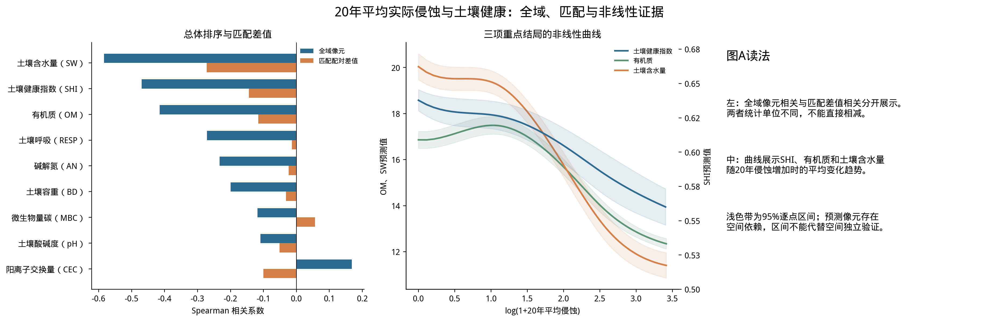
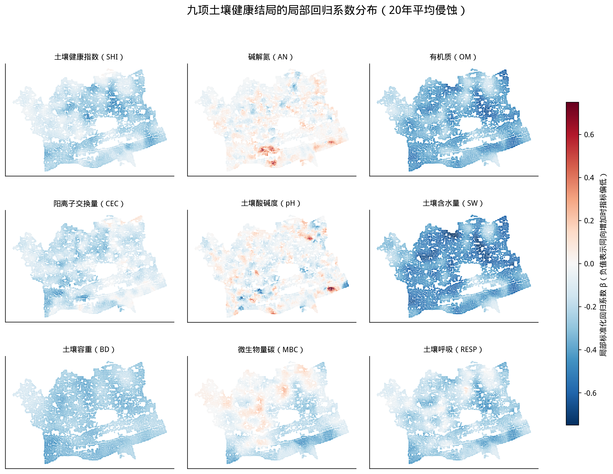
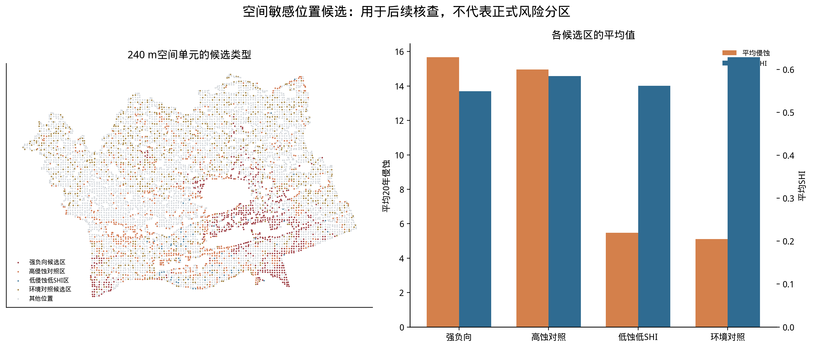
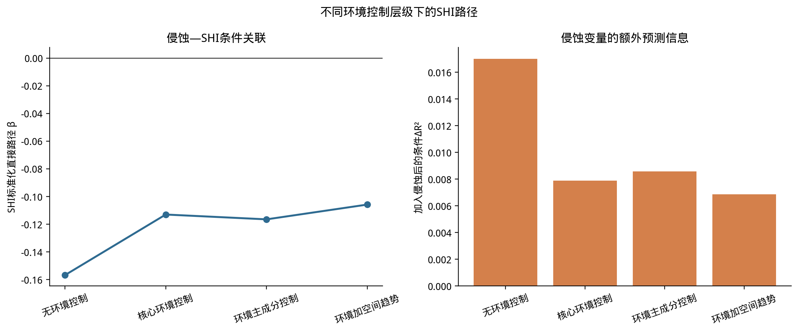
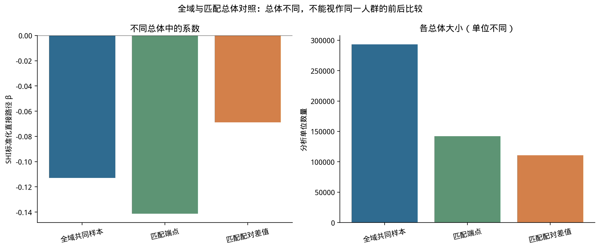
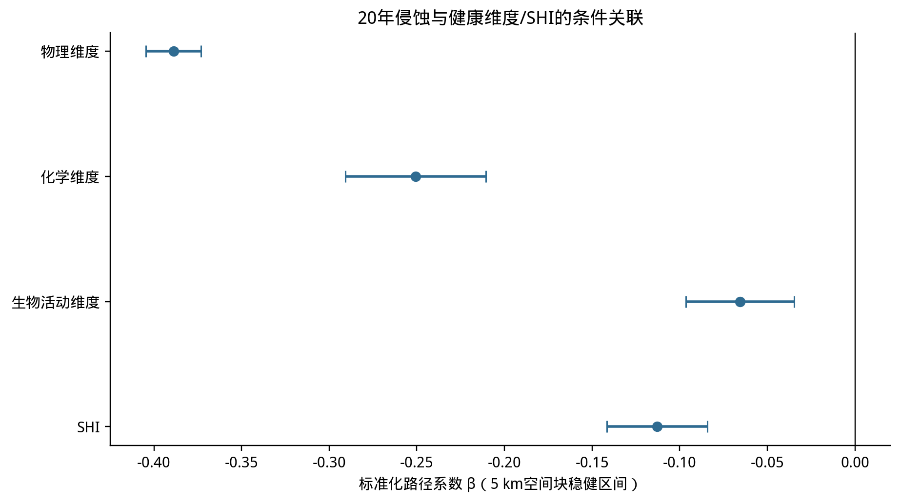
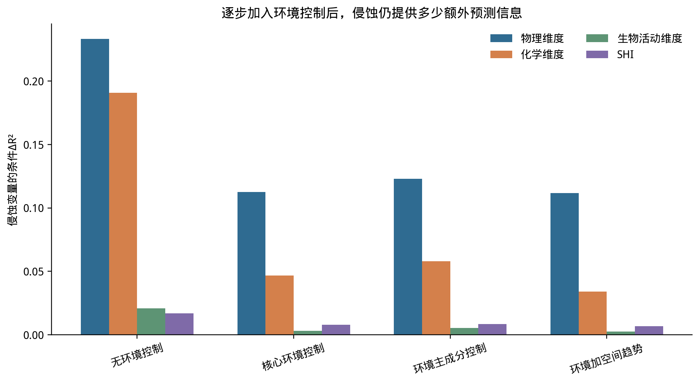
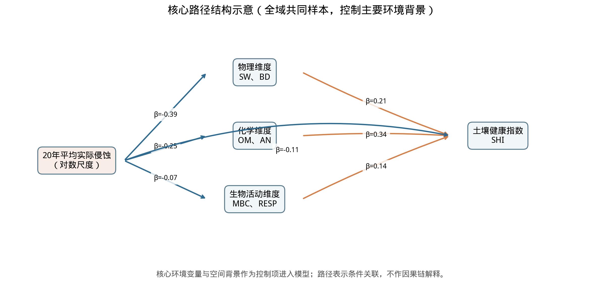
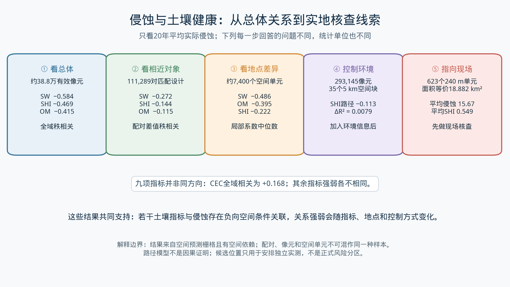
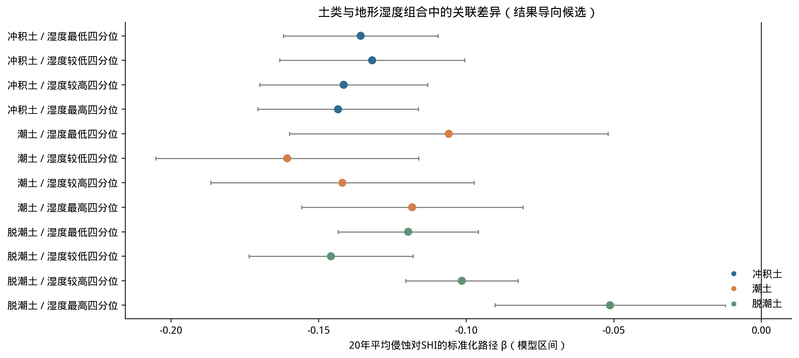

本图集只使用Aa_20yr作为侵蚀暴露变量。全部结果属探索性条件关联；预测栅格不等于独立实测样点，局部系数和候选分区不作因果或正式风险解释。
展示20年侵蚀与九项结局的全域秩相关、匹配配对差值相关，以及SHI/OM/SW的平滑响应。

在共同的240 m空间单元上展示GWR-LCR局部标准化系数，负值表示局部条件关联方向为负。

展示由20年侵蚀、SHI与局部回归形成的探索性组合区；用于核查，不是正式风险等级。

比较逐步加入环境变量时Aa_20yr—SHI的标准化系数与条件ΔR²。

展示全域、匹配端点和匹配配对差值的系数及总体量级；三类单位不合并解释。

展示Aa_20yr对物理、化学、生物活动维度及SHI的路径系数和5 km空间块区间。

比较不同控制层级时侵蚀变量对各健康结局的条件预测增量。

展示全域共同样本核心模型中的直接关联和健康维度与SHI的路径；不是因果图。

把全域相关、环境相近配对、局部回归、环境控制模型和现场抽样候选区串成一条证据线；展示关联，不代表因果。

用于查看环境分组差异；分组曾按探索结果筛选，不是独立验证。
